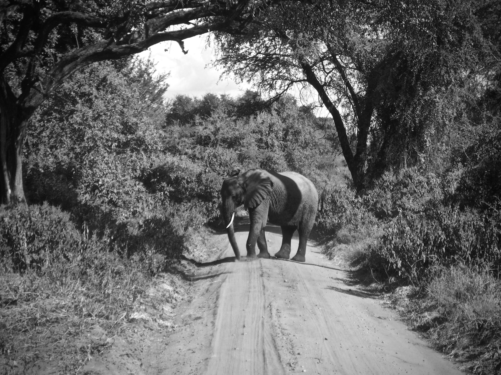

Welcome to my website— a space for my digital and physical prints to live. I have been a long-time amateur photographer, beginning to capture images in an intentional way when I was lucky enough to take a film photography course in high school. Here it seems we got to be the some of the last students to engage with photography in a tactile way— developing negatives, learning how to use a dark room, using an enlarger to recreate photos on silver gelatine paper. I am grateful for the foundation when it comes to photography — understanding the actual function of light, aperture, and shutter speed to create an image for a moment in time.
Of course, an explosion of images and ease now exists with digital photography and the introduction of the iphone, both of which I am grateful for! However, I am overwhelmed with my own data. I never see my pictures. There seems to a big divide between social photos that help you experience a moment and the composition of images the way I used to take them. I either take a million or none, for the sake of being ‘present.’ Lastly, looking at the computer after a long day in order to organize them feels like work. I am hoping this site will change that.
I am using this site to preserve both digital and film photography, and give me a destination besides my hard drive for the pictures. I also hope to have some motivation to shake off the dust of my old skills, try taking photography walks again, and simply become more intentional with the amount of imagery I create. While older techniques have been revived and a love for film remains, most of these photos are digital images.
My hope for when I visit my own site (and for anyone else who happens to) is that it feels serene without any advertising or distraction, a way to reclaim a space for images with a bit of composition and craft, and a moment to remember the sublime moments, people and places I’ve encountered (and captured) in my life. It’s a private space, but public enough on the web that I can be intentional with a place to “publish.” Thank you for visiting this repository of images, as I sift through and rediscover them myself.